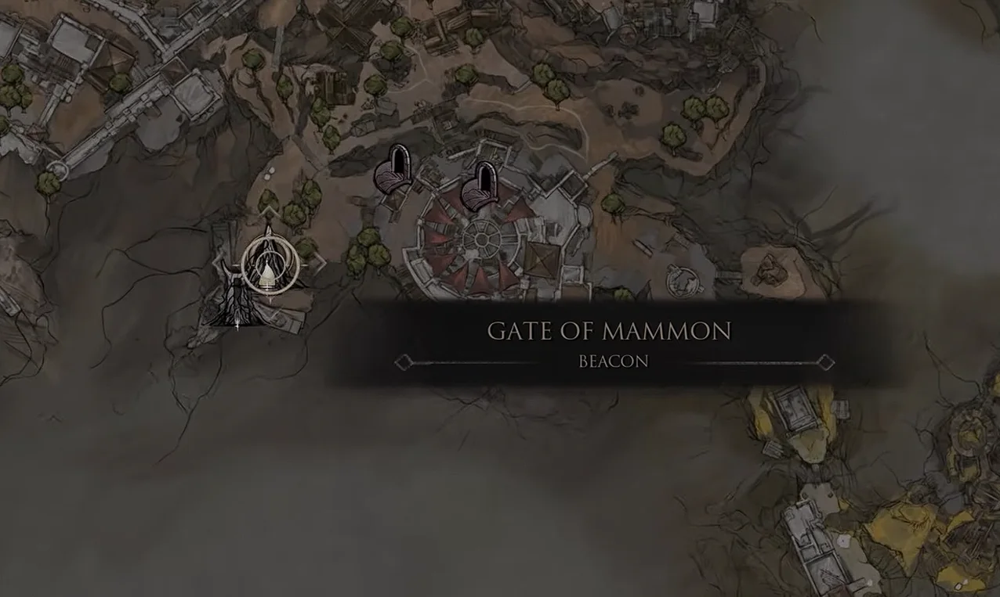
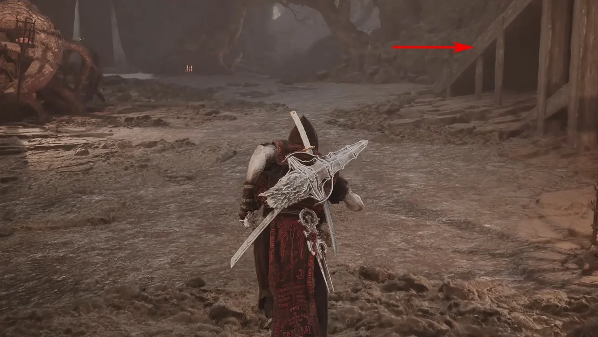
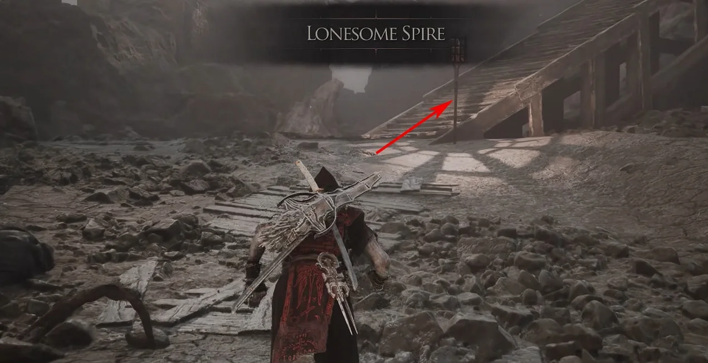
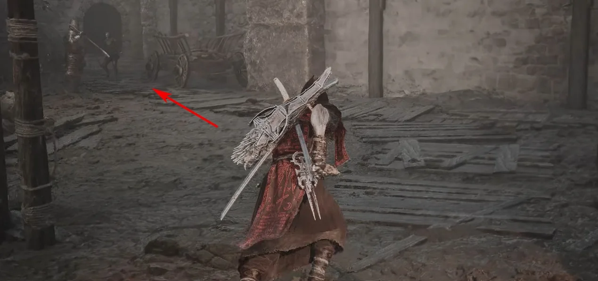
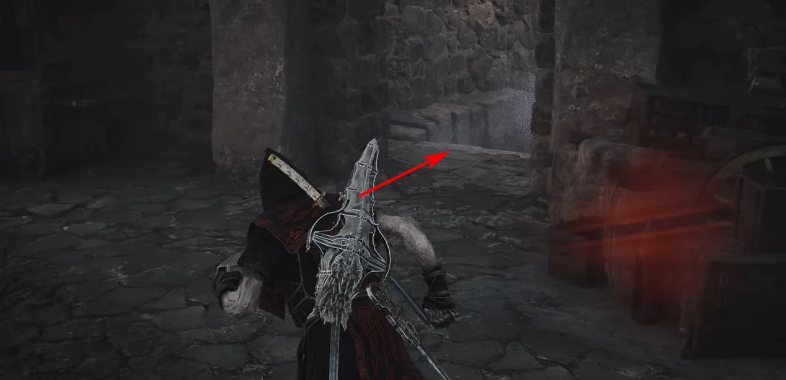
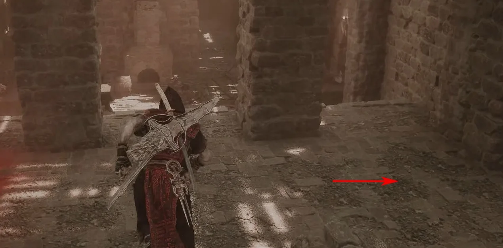
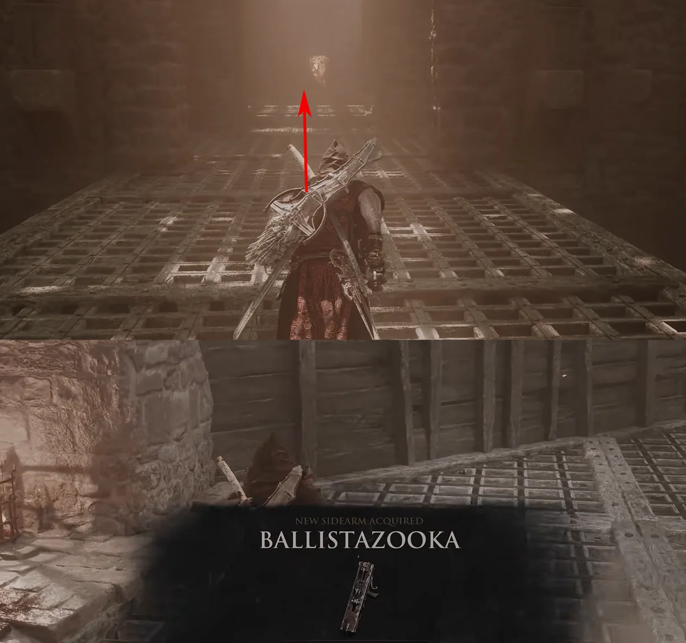

Ballistazooka is the reward at the end of Sentry's Grave. Start from Gate of Mammon Beacon, follow the Lonesome Spire route, then clear the final encounter.
Region
Mammon
Location
Sentry's Grave
Type
Sidearm

Route 01Fast travel to Gate of Mammon Beacon.

Route 02From the Beacon, turn toward the rear-right staircase and climb it.

Route 03At Lonesome Spire, keep taking the stairs upward.

Route 04At the upper level, turn left along the marked path.

Route 05Turn right into Sentry's Grave.

Route 06Continue through the dungeon corridor following the route arrow.

Route 07Clear the final encounter in Sentry's Grave to receive Ballistazooka.